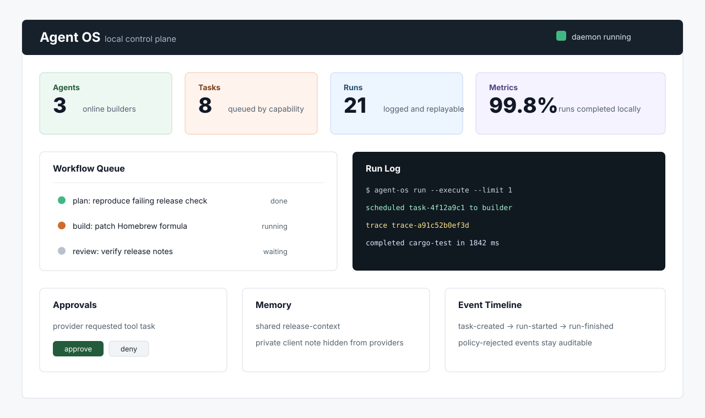

Durable by default
Agents, tasks, workflows, events, memory, approvals, runs, logs, and replay data live in a portable project state directory.
A durable control plane for AI agent products: queues, capability scheduling, memory, policy checks, tool execution, run logs, metrics, and a local dashboard API.
Agent frameworks describe behavior. Agent OS handles the operating layer that makes local agent work inspectable, recoverable, and safe to automate.
Agents, tasks, workflows, events, memory, approvals, runs, logs, and replay data live in a portable project state directory.
The CLI and local HTTP API expose the same runtime concepts for terminals, dashboards, workers, and product integrations.
Shell and file tools run through workspace checks, redaction, approval gates, cancellation, and auditable run records.
The first run needs no hosted service and no provider API key. It shows scheduling, execution, logs, replay, metrics, and the dashboard API.
agent-os --state ./sandbox init --name "Builder Demo" --force
agent-os --state ./sandbox task create "Run a local builder task" \
--need rust \
--command "printf 'scheduled, executed, logged, replayable\n'"
agent-os --state ./sandbox run --execute --limit 1
agent-os --state ./sandbox runs list
agent-os --state ./sandbox runs replay RUN_ID
agent-os --state ./sandbox metrics
export AGENT_OS_API_TOKEN=dev-token
agent-os --state ./sandbox api serve \
--addr 127.0.0.1:7373 \
--token-env AGENT_OS_API_TOKEN
Use these captures for release notes, the repository README, or a product landing page.